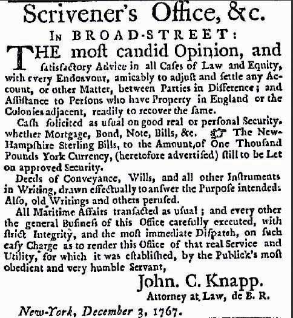

Minimum efficient scaleThe smallest a business can be and still remain efficient and/or profitable. in finance is larger than most individuals can invest. Somebody with $100, $1,000, $10,000, even $100,000 to invest would have a hard time making any profit at all, let alone the going risk-adjusted return. That is because most of his or her profits would be eaten up in transaction costs like banking and brokerage fees, dealer spreads, attorney fees, and the opportunity cost of his or her time, and liquidity and diversification losses. Many types of bonds come in $10,000 increments and so are out of the question for many small investors. A single share of some companies, like Berkshire Hathaway, costs thousands or tens of thousands of dollars and so is also out of reach.www.berkshirehathaway.com Most shares cost far less, but transaction fees, even after the online trading revolution of the early 2000s, are still quite high, especially if an investor were to try to diversify by buying only a few shares of many companies. Financial markets are efficient enough that arbitrage opportunities are rare and fleeting. Those who make a living engaging in arbitrage, like hedge fund D. E. Shaw, do so mainly by exploiting scale economies. They need superfast (read “expensive”) computers and nerdy (read “expensive”) employees to operate custom (read “expensive”) programs on them. They also need to engage in large-scale transactions because of high fixed costs. With a flat brokerage fee of $50, for example, you won’t profit making .001 percent on a $1,000 trade, but you will on a $1,000,000,000 one.
What about making loans directly to entrepreneurs or other borrowers? Fuggeddaboutit! The time, trouble, and cash (e.g., for advertisements like that in Figure 8.2 "Need a loan?") it would take to find a suitable borrower would likely wipe out any profits from interest. The legal fees alone would swamp you! (It helps if you can be your own lawyer, like John C. Knapp.) And, as we’ll learn below, making loans isn’t all that easy. You’ll still occasionally see advertisements like those that used to appear in the eighteenth century, but they are rare and might in fact be placed by predators, people who are more interested in robbing you (or worse) than lending to you. A small investor might be able to find a relative, co-religionist, colleague, or other acquaintance to lend to relatively cheaply. But how could the investor know if the borrower was the best one, given the interest rate charged? What is the best rate, anyway? To answer those questions even haphazardly would cost relatively big bucks. And here is another hint: friends and relatives often think that a “loan” is actually a “gift,” if you catch my “drift.”
Figure 8.2 Need a loan?
From Early American Newspapers, an Archive of Americana Collection, published by Readex (Readex.com), a division of NewsBank, Inc.
A new type of banking, called peer-to-peer bankingIn this new type of banking, a facilitator links lenders to borrowers, acting more like a securities broker than a bank., might reduce some of those transaction costs. In peer-to-peer banking, a financial facilitator, like Zopa.com or Prosper.com, reduces transaction costs by electronically matching individual borrowers and lenders. Most peer-to-peer facilitators screen loan applicants in at least a rudimentary fashion and also provide diversification services, distributing lenders’ funds to numerous borrowers to reduce the negative impact of any defaults.For details, see “Options Grow for Investors to Lend Online,” Wall Street Journal, July 18, 2007. Although the infant industry is currently growing, the peer-to-peer concept is still unproven and there are powerful reasons to doubt its success. Even if the concept succeeds (and it might given its Thomas Friedman–The World Is Flatishnessen.wikipedia.org/wiki/The_World_is_Flat), it will only reinforce the point made here about the inability of most individuals to invest profitably without help.
Financial intermediaries clearly can provide such help. They have been doing so for at least a millennium (yep, a thousand years, maybe more). One key to their success is their ability to keep credit information that they have created a secret. Bankers have incentives to discover who the best borrowers are because it is difficult for others to steal that information. Insurers cannot simply wait for another insurer to discern good from bad risks and then exploit the information. Free riding, in other words, is minimal in traditional financial intermediation.
Another key is the ability of financial intermediaries to achieve minimum efficient scale. Banks, insurers, and other intermediaries pool the resources of many investors. That allows them to diversify cheaply because instead of buying 10 shares of XYZ’s $10 stock and paying $7 for the privilege (7/100 = .07) they can buy 1,000,000 shares for a brokerage fee of maybe $1,000 ($1,000/1,000,000 = .001). In addition, financial intermediaries do not have to sell assets as frequently as individuals (ceteris paribus, of course) because they can usually make payments out of inflows like deposits or premium payments. Their cash flow, in other words, reduces their liquidity costs. Individual investors, on the other hand, often find it necessary to sell assets (and incur the costs associated therewith) to pay their bills.
As specialists, financial intermediaries are also experts at what they do. That does not mean that they are perfect—far from it, as we learned during the financial crisis that began in 2007—but they are certainly more efficient at accepting deposits, making loans, or insuring risks than you or I will ever be (unless we work for a financial intermediary, in which case we’ll likely become incredibly efficient in one or at most a handful of functions). That expertise covers many areas, from database management to telecommunications. But it is most important in the reduction of asymmetric information.
Asymmetric information is the devil incarnate, a scourge of humanity second only to scarcity. Seriously, it is a crucial concept to grasp if you want to understand why the financial system exists, and why it is, for the most part, heavily regulated. Asymmetric information makes our markets, financial and otherwise, less efficient than they otherwise would be by allowing the party with superior information to take advantage of the party with inferior information. Where asymmetric information is high, resources are not put to their most highly valued uses, and it is possible to make outsized profits by cheating others. Asymmetric information helps to give markets, including financial markets, the bad rep they have acquired in some circles.
Financial intermediaries and markets can reduce or mitigate asymmetric information, but they can no more eliminate it than they can end scarcity. Financial markets are more transparent than ever before, yet dark corners remain.www.investopedia.com/articles/00/100900.asp The government and market participants can, and have, forced companies to reveal important information about their revenues, expenses, and the like, and even follow certain accounting standards.www.fasb.org As a CEO in a famous Wall Street Journal cartoon once put it, “All these regulations take the fun out of capitalism.” But at the edges of every rule and regulation there is ample room for shysters to play.knowledge.wharton.upenn.edu/article.cfm?articleid=585&CFID=4138806&CFTOKEN=88010645 When managers found that they could not easily manipulate earnings forecasts (and hence stock prices, as we learned in Chapter 7 "Rational Expectations, Efficient Markets, and the Valuation of Corporate Equities"), for example, they began to backdate stock optionsIn this context, a form of compensation given to executives, managers, and sometimes other employees to reward them for increasing their company’s stock price. By backdating the options, managers were able to profit from their stock options, although stock prices declined (or did not rise very much). to enrich themselves at the expense of stockholders and other corporate stakeholders.
What is the precise nature of this great asymmetric evil? Turns out this devil, this Cerberus, has three heads: adverse selection, moral hazard, and the principal-agent problem. Let’s lop off each head in turn.